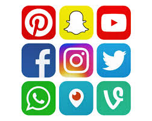
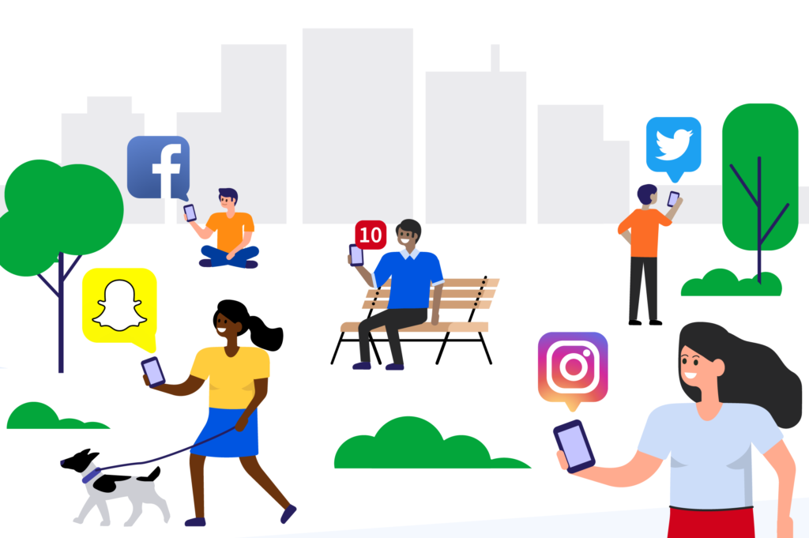

Social media is something out there


A report by Common Sense found:
-51 percent of teens visit social networking sites on a daily basis
-More than a third of teens visit their main social networking site several times a day.
-1 in 4 teens is a heavy social media user, using at least two different types of social media each day.
Teen Brain affect from social media
For many teens, social media can become almost addictive. In a study by researchers at the UCLA brain mapping center, they found that certain regions of teen brains became activated by "likes" on social media, sometimes causing them to want to use social media more.
During the study, researchers used an fMRI scanner to image the brains of 32 teenagers as they used a fictitious social media app resembling Instagram. The teenagers were shown more than 140 images where "likes" were believed to be from their peers. However, the likes were actually assigned by the research team.
As a result, the brain scans revealed that in addition to a number of regions, the nucleus accumbens, part of the brain's reward circuitry, was especially active when they saw a large number of likes on their own photos. According to researchers, this area of the brain is the same region that responds when we see pictures of people we love or when we win money. What's more, researchers say that this reward region of the brain is particularly sensitive during the teen years, which could explain why teens are so drawn to social media.
In another part of the study, researchers could see a correlation between social media and peer influence. Participants in the study were shown both neutral photos and risky photos. What they found is that the type of image had no impact on the number of likes given by teens in the study. Instead, they were likely to hit "like" on the popular photos regardless of what they showed. Researchers believe this behavior shows that peers can have both a positive and negative influence on others while using social media.
BOOMERS
Boomers wish they were as cool as these insta and snap users. They aspire to be a facebook mom. But they can't so OK BOOMER
This link goes to a false page but Mr. Lengel says its good